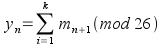

:: Crittografia - Cifrari a blocchi ::
Torna alla pagina di Crittografia
I cifrari a blocchi lavorano su blocchi di n bit. Se ho n bit, vuol dire che posso avere 2n blocchi diversi. Quando trasformo il blocco di testo in chiaro in testo cifrato, occorre che la trasformazione da n bit in chiaro ad n bit cifrati sia univoca, ovvero reversibile, o anche non singolare.
La chiave è quella che effettua questa mappatura tra n bit in chiaro ed n bit cifrati. In generale, se ho un blocco di n bit, la chiave deve avere lunghezza di almeno n * 2n bit, perché deve coprire tutte le possibili mappature dei miei n bit.
Infatti, se ho n bit di blocco, allora avrò 2n possibili valori del blocco. L'idea sarebbe che ogni singolo valore del blocco possa essere mappato in un altro singolo valore del blocco: una mappatura 1 a 1, in pratica. Mi occorrono quindi 2n mappature. Ogni mappatura è composta da una sequenza di n bit, trattandosi appunto di un blocco di n bit: ecco perché il valore totale è di n*2n bit.
Ecco un esempio, che magari chiarisce un po' di più: se ho un blocco di 3 bit, ho i seguenti valori: 000, 001, 010, 011, 100, 101, 110, 111 = 23 = 8 valori.
Una possibile cifratura potrebbe essere questa:
000 -> 100 001 -> 101 010 -> 000 011 -> 110 100 -> 011 101 -> 111 110 -> 001 111 -> 010
La chiave, guardando questa tabella, è la colonna di destra. Devo infatti procedere così: il mio blocco ha valore 010, quindi prendo la 010-esima voce della tabella, e ho la sua cifratura. Si vede quindi che la colonna di destra è composta da 8 voci da 3 bit l'una: per l'appunto n * 2n
Ma una chiave del genere è veramente troppo grossa, se uso blocchi di grosse dimensioni. Bisognerà quindi approssimare questo sistema ideale in un sistema reale, con chiavi molto più piccole.
Per approssimare, Feistel ha suggerito di usare due o più cifrature di base in sequenza, così che il prodotto sia più robusto della singola cifratura.
Per realizzare questa robustezza, dobbiamo fare appello ai principi di confusione e diffusione, che servono per rompere l'analisi statistica del testo cifrato.
Diffusione vuol dire espandere in qualche modo la struttura statistica del testo in chiaro, e mapparla su un più grande intervallo di testo cifrato, così da "annebbiare" le analisi statistiche.
Per fare un esempio, se attuo una semplice cifratura a sostituzione in cui una lettera corrisponde ad una sola altra lettera, l'analisi delle frequenze mi dà la soluzione in poco tempo. Ma se invece per ottenere una lettera di testo cifrato devo lavorare su più lettere di testo in chiaro, allora l'analisi statistica ha meno successo. Ad esempio, Playfair usa bigrammi, e se è vero che posso sempre usare la frequenza dei bigrammi, è anche vero che mi serve più testo per poter cavar fuori qualcosa.
Confusione vuol dire invece complicare la relazione esistente tra il testo cifrato e la chiave, così anche se ho statistiche sul testo, non sono in grado di risalire alla chiave.
Feistel proponeva il seguente sistema, per la diffusione. Invece di andare da m1 -> y1, dove m è una lettera del testo in chiaro e y è una del testo cifrato, uso le m1+k lettere successive, facendone la media:

Oppure, se ho blocchi binari, posso permutare, poi applicare una funzione f, poi permutare ancora, applicare ancora la f etc. La permutazione fa sì che al risultato della f contribuiscano più bit sparsi per il blocco.
Il blocco è lungo 2w bit, perché viene considerato come composto da 2 parti, ciascuna lunga w bit.
Ho n fasi, e in ogni fase la parte di sinistra in output si chiama Ln, quella di destra Rn. La fase n prende in input le parti Ln-1 e Rn-1.
Ecco quello che succede:
La F è la funzione di crittografia scelta. Inoltre, dopo l'ultima fase, di solito c'è un'ulteriore scambio per invertire le posizioni di Rn e Ln.
Ogni fase usa la Kn-esima chiave.
Nella struttura di Feistel compaiono sia le sostituzioni che le permutazioni.
Abbiamo una sostituzione quando la parte L viene sostituita con lo XOR tra se stessa e l'output della F:
L1 = L0 XOR F(R0, K0)
Abbiamo la permutazione quando, nell'ultima parte di ogni fase, inverto la posizione di Ln e Rn, dove Ln e Rn sono gli output di ciascuna fase.
Le reti di Feistel si caratterizzano per:
Per decrittografare, applico la stessa rete, partendo dal testo cifrato, ma usando le sottochiavi al contrario, ovvero nella prima fase uso l'ultima sottochiave usata nella crittografia, e così via.
Funziona? Sì. Vediamo qui una struttura di Feistel ad 1 fase con il risultato dell'ultima fase scambiato di posto, come dicevo qui sopra.
E adesso un po' di conti. Per crittografare, conosco L0, R0 e la chiave K
L1 = R0 R1 = L0 XOR F(R0, K) L2 = R1 = L0 XOR F(R0, K) R2 = L1 = R0
Ora, per decrittografare, conosco solo R2, L2 e la chiave K, oltre che ovviamente l'algoritmo.
R0 lo ottengo, perché ho R2, e so che R2 = L1 = R0 So che L2 = R1 = L0 XOR F (R0, K) => L2 = L0 XOR F (R0, K) => L0 = L2 XOR F (R0, K) L2 ce l'ho, R0 ce l'ho, K ce l'ho => so ricavare anche L0.
Se applico per tutte le fasi riesco a risalire al messaggio originale.